Um teste para verificar a significância de clusters
Projeto de Pesquisa - TCC I
Allan Vieira
Orientador - Prof. Dr. André Cançado
Sumário
Introdução
Objetivos
Metodologia
Resultados Preliminares
Cronograma
Referências
O problema de pesquisa ...
Introdução
- Expressivo desenvolvimento das técnicas de clustering nas últimas décadas;
- "Hype" de Machine Learning;
Mas...- algoritmos \(\rightarrow\) restrições:
- "shape" dos dados
vsalgoritmo empregado definição a priori do número de clusters
- \(\rightarrow\)
"Blinded by Science"!!
- Muitos algoritmos de clustering
vspoucos métodos de verificação dok Como determinar o número ideal de clusters?
Objetivos
- Desenvolver um algoritmo para testar a significância de clusters;
- Implementar o algoritmo em R e disponibilizá-lo através de um pacote;
Metodologia (1)
Algumas restrições:
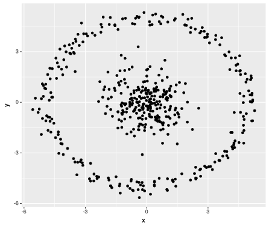 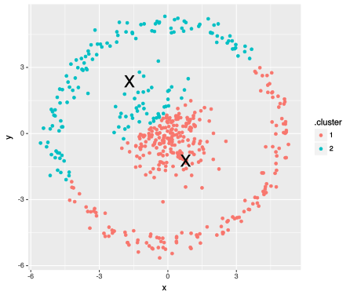 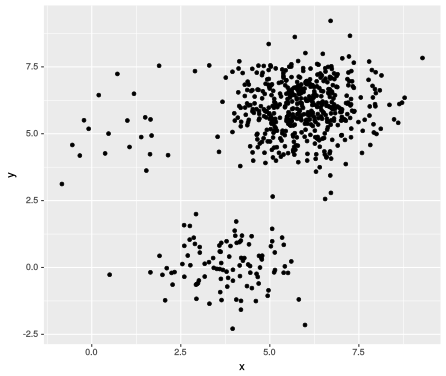 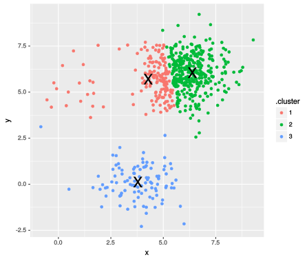
Baseado no conteúdo de http://varianceexplained.org/r/kmeans-free-lunch/
- \(\rightarrow\)
No free lunch!!
Funcionamento do kmeans:
(por Andrey A. Shabalin - http://shabal.in/)
 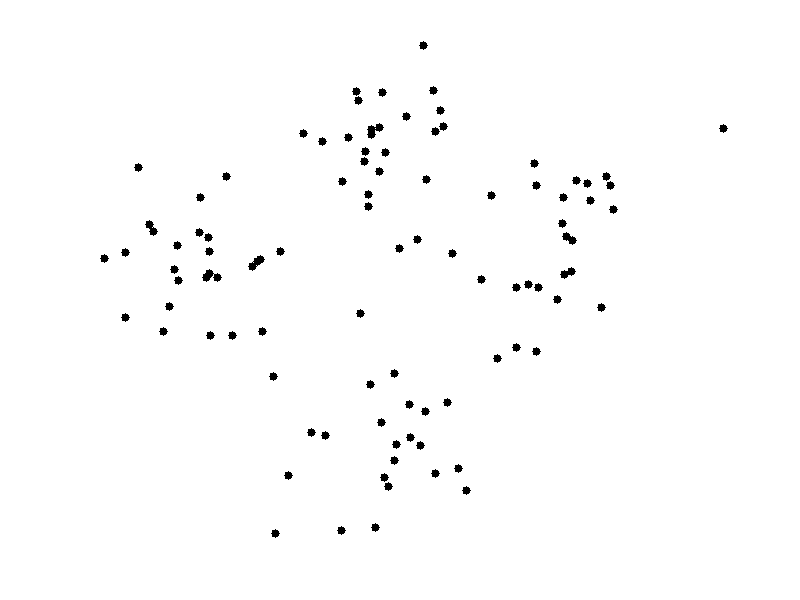
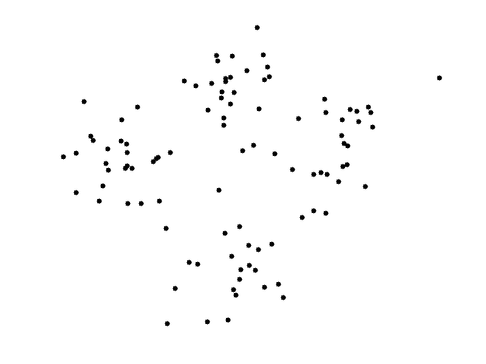

O método proposto ...
Metodologia (2)
inspiração: Cubic Clustering Criterion (CCC)
Metodologia (3)
Alguns resultados ...
Resultados preliminares
| M | n1 | n2 | mean1 | mean2 | sd1 | sd2 | acerto |
|---|---|---|---|---|---|---|---|
| 100 | 32 | 29 | -3 | 1 | 0.4 | 0.4 | TRUE |
| 100 | 15 | 13 | -1 | 1 | 0.3 | 0.3 | TRUE |
| 100 | 50 | 65 | -1 | 1 | 1.0 | 1.0 | FALSE |
| 100 | 50 | 65 | -1 | 1 | 0.7 | 0.7 | TRUE |
| 100 | 100 | 80 | -1 | 1 | 0.5 | 0.7 | TRUE |
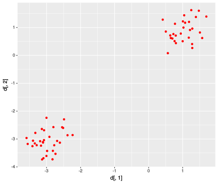 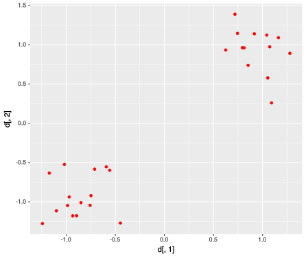 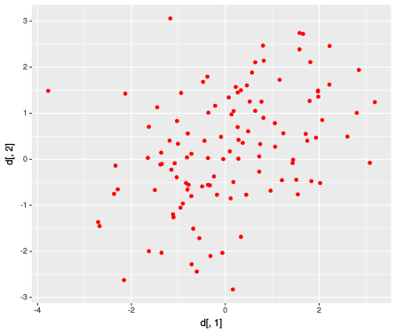 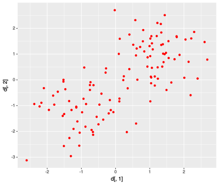 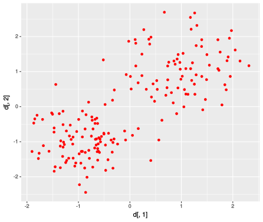
Cronograma
- 2S2017:
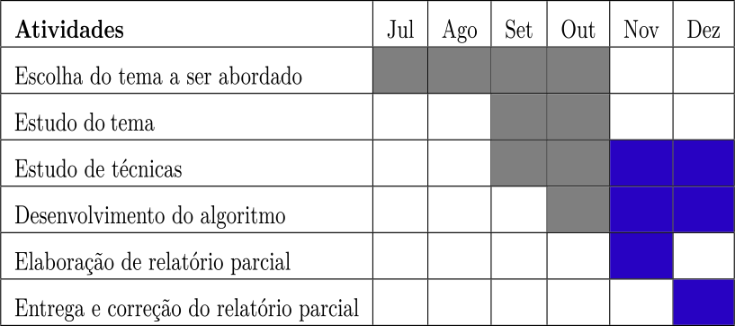
- 1S2018:
Bibliografia
[1] AUFFERMANN, W. F.; NGAN, S. C.; HU, X.
Cluster significance testing using the bootstrap.NeuroImage, v. 17, p. 583–591, 2002.[2] BOTTOMLEY, P.; NAIRN, A.
Blinded by science: The managerial consequences of inadequately validated cluster analysis solutions.International Journal of Market Research, v. 46, n. 2, 2004.[3] FUENTES, C.; CASELLA, G.
Testing for the existence of clusters.p. 115–157, Jul 2009. Sort (Barc). 33(2).[4] HALKIDI Y. BATISTAKIS, M. V. M.
On clustering validation techniques. Journal of Intelligent Information Systems, v. 17, n. 2/3, p. 107–145, 2001.[5] SAS Institute Inc.,
Cubic Clustering Criterion.1983. SAS Technical Report A-108. Cary, NC: SAS Institute Inc., 1983, 56 pp.
Obrigado!!
Feito no
 com
,
com
,
 e
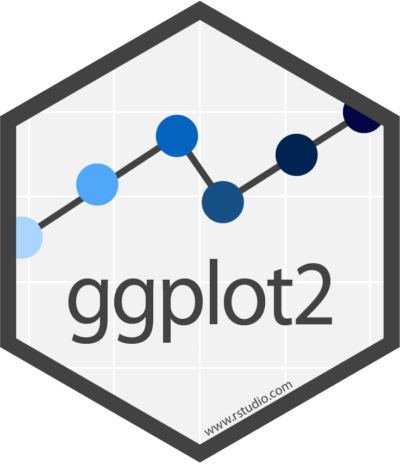 !!
e
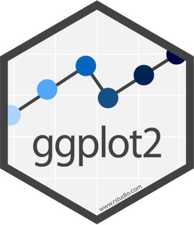 !!
Códigos e apresentação disponíveis no em:
em: